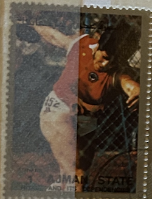
| SOURCE | TITLE| IMAGE MATCH | click to source page |
| Shutterstock | Munich Stamp: Over 1,849 Royalty-Free Licensable Stock Photos | Shutterstock | 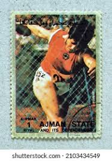 |
| Alamy | The discus throw hi-res stock photography and images - Page 6 - Alamy | 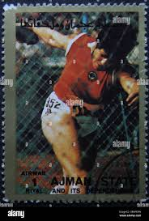 |
| Poppe Stamps | Poppe Stamps: Vietnam (Socialist Republic), 1983, 596, Olympic Games, Athletics - stamps for sale by theme and country | 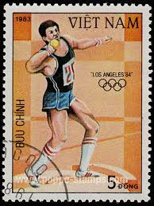 |
| Shutterstock | 2+ Thousand Diskus Werfen Royalty-Free Images, Stock Photos & Pictures | Shutterstock | 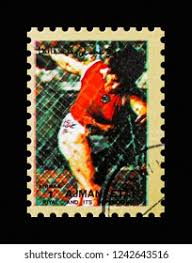 |
| Discogs | Suffix – No Matter How Fast We Run – Cassette (Red), 2010 [r3103863] | Discogs | 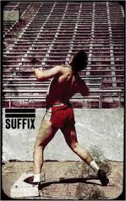 |
| Get Archive | 27 1972 summer olympics on stamps of umm al quwain Images: PICRYL - Public Domain Media Search Engine Public Domain Search | 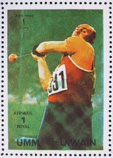 |
| Old postcards | Track & Field Postcards | 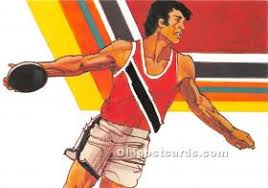 |
| eBay | Vintage Coliseum / Compton Invitational Program June 7 1968 Track & Field Rare | eBay | 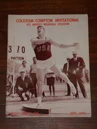 |
| Sports Illustrated Covers | George Frenn, 1970 Aau Track Meet Sports Illustrated Cover by Sports Illustrated | 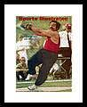 |
| Coleka | Geza Fejer - and Field (Discus Throw) - Munich 72 - Olympic Games sticker | 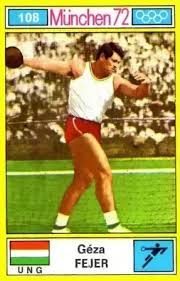 |
| VS Athletics | TURBOJAV THROWING BOOKLET | 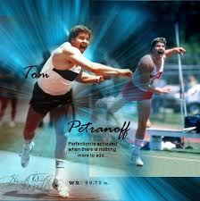 |
| Find Your Stamps Value | Value of national savings 2/6 stamps | 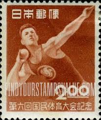 |
| Biblioteca Nacional de Angola | O CALLAGHAN | 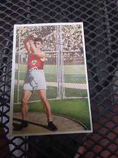 |
| Wolfgang's Vault | Strength & Health | September 1960 at Wolfgang's | 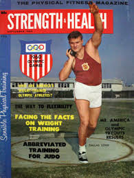 |
| Alchetron.com | George Frenn - Alchetron, The Free Social Encyclopedia | 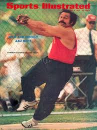 |
| BoxingTreasures.com | 1952 US TRACK & FIELD CHAMPIONSHIPS Vintage Program With OLLIE MATSON NFL HOF'er, GEORGE RHODEN, HARRISON DILLARD, MALVIN WHITFIELD +++ | 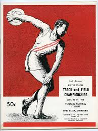 |
| eBay UK | 2 x " Esso " Tokyo 1964 Olympic cards Anne Packer 800m gold Al Oerter discus | eBay UK | 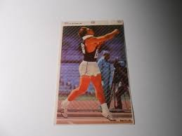 |
| eBay | VTG 1995 Kodak Lapel Pinback Pin 1912 Stockholm Olympics Jim Thorpe Decathlon | eBay | 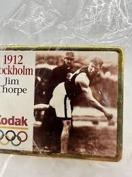 |
| StockCake | Free Athlete Throws Shot Image - Athlete, Shot Put, Strength | Download at StockCake | 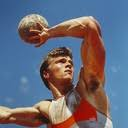 |
| Western Brown Local Schools | Athletic Hall of Fame | 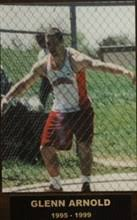 |
| Amazon.com | Amazon.com: Meg Ritchie Trading Card (Arizona) 1990 Collegiate Collection #124 : Collectibles & Fine Art | 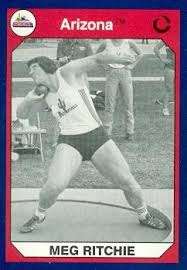 |
| Beaver County Times | The 50 Greatest Sports Figures from The Valley | 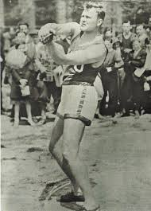 |
| RunBlogRun | This Day in Track & Field History, April 5, 2024, UTEP sets 4x220yWR (1957), Al Oerter (1958), Lorna Griffin (1980), Jud Logan (1986) - runblogrun | 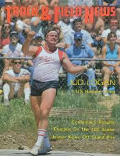 |
| Life In A Nutshell (@espo6325) • Facebook | 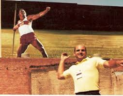 | |
| eBay | THE HAMMER Alexei Spiridinov Olympics Track & Field 1978 SPORTSCASTER CARD 31-20 | eBay | 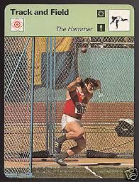 |
| eBay | Central African Republic Stamp 605A - 84 Summer OLympics | eBay | 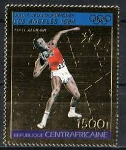 |
| eBay | LOT (3) Bruce Jenner 1994 Signature Rookies Tetrad Titans 1/10000 SP Cards NM+ | eBay | 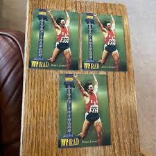 |
| Barnes & Noble | Teach Yourself Hammer Throw by Dr. A.K. Srivastava | eBook | Barnes & Noble® | 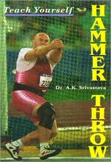 |
| Alamy | Rolf Milser . 1985. Unknown 49 Rolf Milser 1985 Paraguay stamp Stock Photo - Alamy | 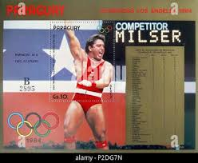 |
| eBay | JAPAN MINT stamps[1989-1993 MNH]Japanese Collection unused 293 | eBay | 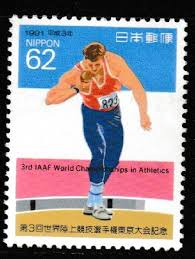 |
| eBay | Sports Track & Field DVDs for sale | eBay | 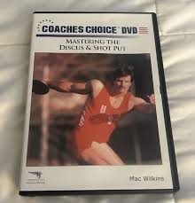 |
| eBay | 2008 Print Ad Of Jim Thorpe For Olympics And Visa | eBay | 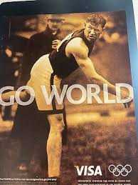 |
| Trading Card Database | Al Oerter Cards | Trading Card Database | 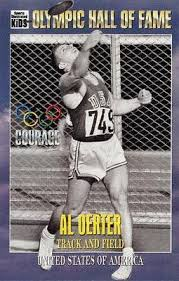 |
| Presbytery Of Detroit | Femke Bol smashes athletics' oldest world record. What could be next? | 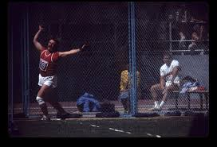 |
| Delighted to meet Youri Sedykh, World Record Holder in the Hammer event who broke the record 5 times at the Cork City Sports in 1984 at the Mardyke. His World record still | 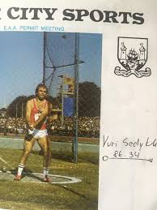 | |
| Trading Card Database | Al Oerter Gallery | Trading Card Database | 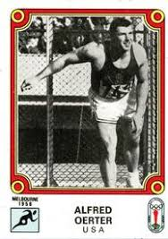 |
| eBay | 1994 SIGNATURE ROOKIES TETRAD TITANS BRUCE JENNER #CXXIV MINT | eBay | 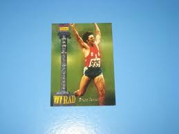 |
| JH Postcards | Nadezhda Tkachenko - pentathlon - shot put - athletics - Soviet champi – JH Postcards | 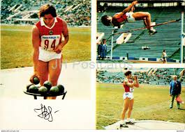 |
| eBay | 1977-79 Sportscaster Card, #31.20 Track, A. Spiridinov, The Hammer | eBay | 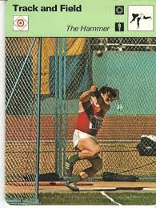 |
| AbeBooks | Discus Throwing: 9780851341149 - AbeBooks | 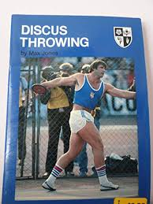 |
| James and Anna Elf were on Sunday Brunch yesterday to discuss their new book 'A Load of Old Balls: The QI History of Sport' which comes out this Thursday! You can order | 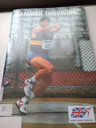 | |
| eBay | 1994 Signature Rookies Bruce Jenner NM-MT | eBay | 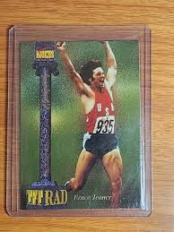 |
| Tinakori Books | International Athletics Annual 1969 | 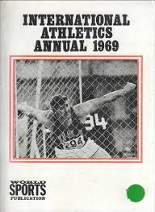 |
| Eventeny | STEER WRESTLER (monochrome) - Eventeny | 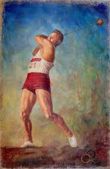 |
| Wikimedia.org | File:Почтовая марка СССР № 5201. 1981. Спорт в СССР.jpg - Wikimedia Commons | 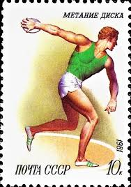 |
| sydneyswans.com.au | Swan Songs - with Gary Brice | 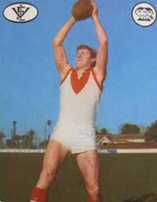 |
| eBay | 3068i 32c Men's Shot Put, Fleetwood FDC **ANY 5=FREE SHIPPING** | eBay | 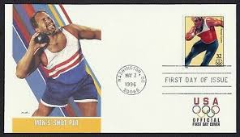 |
| Terrance Bo Rayford's Achievement as a Hall of Famer at Northwestern State University | 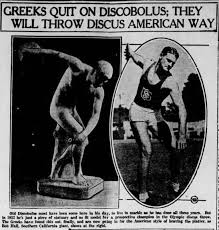 | |
| liverpoolharriers.co.uk | Old Photos Archive - Liverpool Harriers & AC | 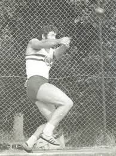 |
| Alamy | Photograph of Jules Noel competing in the discus throw in the 1932 Olympic games. He won gold throwing 47.84 meters Stock Photo - Alamy | |
| eBay | 1930 Press Photo Elwyn Dees of Lorraine, Kansas Shot Put Record Holder | eBay | |
| eBay | 1925 Harvard Crimson Varsity Shot Putter C A C Eastman Set Record Press Photo | eBay | |
| PicClick UK | GREAT BRITAIN V USA ATHLETICS PROGRAMME 12 Aug 1967 WHITE CITY, LONDON £10.80 - PicClick UK | |
| Shutterstock | 3+ Hundred Discus Ring Royalty-Free Images, Stock Photos & Pictures | Shutterstock | |
| eBay | 1958 Press Photo USC's discus thrower Rink Babka, Victorville, California | eBay | |
| eBay | 1978 Sportscaster Track and Field Card The Hammer | eBay | |
| US postage stamp, 10 cent. Olympics 1980 Decathlon. Scott catalog 1790. | ||
| eBay | USA SC # 3068i Men's Shot Put FDC . Feetwood Cachet | eBay | |
| eBay | US FLEETWOOD FIRST DAY COVER 1996 CENTENNIAL OLYMPIC GAMES MEN'S SHOT PUT | eBay | |
| Coaches Choice | Mastering the Discus & Shot Put - Coaches Choice |
{kind=link}